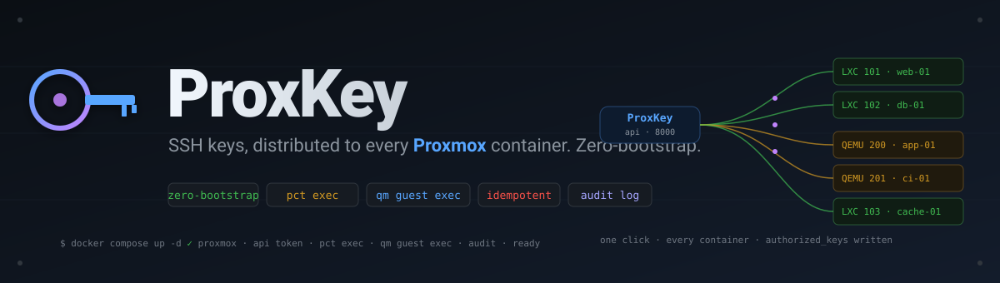

Open source · MIT
SSH keys, on every container,


SSH keys, on every container,
the moment it boots.
ProxKey distributes SSH public keys across Proxmox LXC containers and QEMU VMs via the Proxmox API — no prior SSH access required. Create a container, click deploy, you're in.
